If you call failures experiments, you can put them in your résumé and claim them as achievements.
Mason Cooley
Volunteer—not so you can build your résumé, but so you can build yourself.
Author Unknown
Business communication in written form requires skill and expertise. From text messages to reports, how you represent yourself with the written word counts. Writing in an online environment requires tact and skill, and an awareness that what you write may be there forever. From memos to letters, from business proposals to press releases, your written business communication represents you and your company: your goal is to make it clear, concise, and professional.
Text messages and e-mails are part of our communication landscape, and skilled business communicators consider them a valuable tool to connect. NetiquetteEtiquette, or protocols and norms for communication, on the Internet. refers to etiquette, or protocols and norms for communication, on the Internet.
Whatever digital device you use, written communication in the form of brief messages, or textingWritten communication in the form of brief messages using a digital device., has become a common way to connect. It is useful for short exchanges, and is a convenient way to stay connected with others when talking on the phone would be cumbersome. Texting is not useful for long or complicated messages, and careful consideration should be given to the audience.
It is often said that you can tell how old someone is by how he or she inputs a phone number on a cell phone. If the person uses his or her thumb while holding the digital device, that person may have been raised on video games and be adept at one-handed interfaces. If he holds the digital device with one hand and inputs the number with the other, he may be over thirty, or may be less comfortable with some technological devices. Of course, there is no actual correlation between input and age, but it is a useful example to use when considering who your audience is when writing a text message. If the person is a one-hander, and knows all the abbreviations common to texting, you may be able to use similar codes to communicate effectively. If the person is a two-hander, you are better off using fewer words and spelling them out. Texting can be a great tool for connecting while on the go, but consider your audience and your company, and choose words, terms, or abbreviations that will deliver your message.
Electronic mail, usually called e-mailElectronic mail., is quite familiar to most students and workers. It may be used like text, or synchronous chat, and it can be delivered to a cell phone. In business, it has largely replaced print hard copy letters for external (outside the company) correspondence, as well as taking the place of memos for internal (within the company) communication.Guffey, M. (2008). Essentials of business communication (7th ed.). Mason, OH: Thomson/Wadsworth. E-mail can be very useful for messages that have slightly more content than a text message, but it is still best used for fairly brief messages.
Many businesses use automated e-mails to acknowledge communications from the public, or to remind associates that periodic reports or payments are due. You may also be assigned to “populate” a form e-mail in which standard paragraphs are used but you choose from a menu of sentences to make the wording suitable for a particular transaction.
E-mails may be informal in personal contexts, but business communication requires attention to detail, awareness that your e-mail reflects you and your company, and a professional tone so that it may be forwarded to any third party if needed. E-mail often serves to exchange information within organizations. Although e-mail may have an informal feel, remember that when used for business, it needs to convey professionalism and respect. Never write or send anything that you wouldn’t want read in public or in front of your company president.
Let’s look at two examples of business e-mail. In Figure 9.1, we have an e-mail form. In Figure 9.2, we have a letter written specifically for the situation and audience.
Figure 9.1
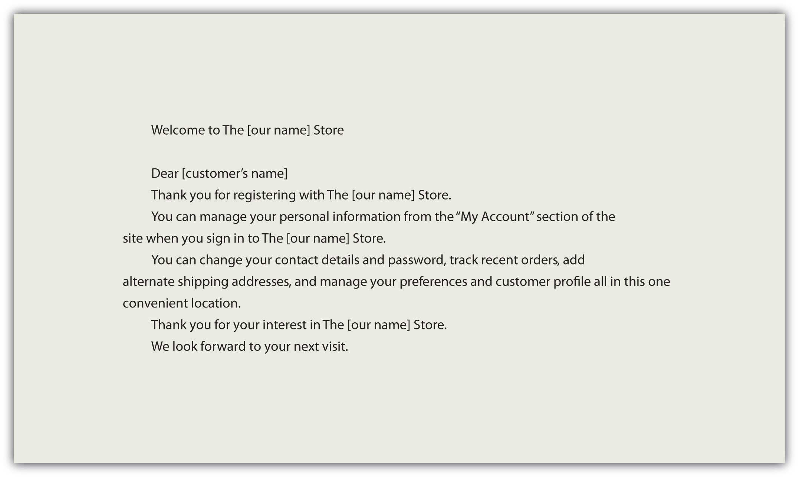Figure 9.2
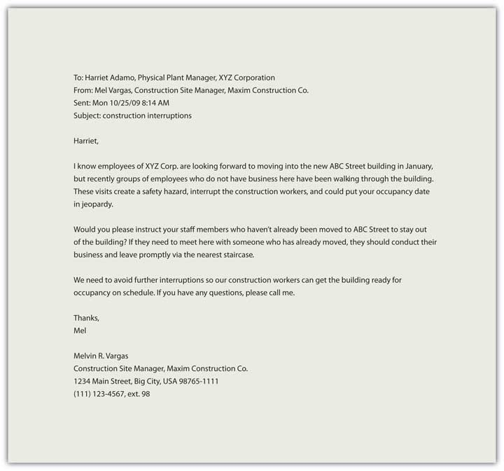We create personal pages, post messages, and interact via mediated technologies as a normal part of our careers, but how we conduct ourselves can leave a lasting image, literally. The photograph you posted on your MySpace page may have been seen by your potential employer, or that nasty remark in a post may come back to haunt you later. Some fifteen years ago, when the Internet was a new phenomenon, Virginia Shea laid out a series of ground rules for communication online that continue to serve us today.
Her rules speak for themselves and remind us that the golden rule (treat others as you would like to be treated) is relevant wherever there is human interaction.
A memoAn abbreviation for memorandum; normally used for communicating policies, procedures, or related official business within an organization. (or memorandum, meaning “reminder”) is normally used for communicating policies, procedures, or related official business within an organization. It is often written from a one-to-all perspective (like mass communication), broadcasting a message to an audience, rather than a one-on-one, interpersonal communication. It may also be used to update a team on activities for a given project, or to inform a specific group within a company of an event, action, or observance.
A memo’s purpose is often to inform, but it occasionally includes an element of persuasion or a call to action. All organizations have informal and formal communication networks. The unofficial, informal communication network within an organization is often called the grapevineThe unofficial, informal communication network within an organization, often characterized by rumor, gossip, and innuendo., and it is often characterized by rumor, gossip, and innuendo. On the grapevine, one person may hear that someone else is going to be laid off and start passing the news around. Rumors change and transform as they are passed from person to person, and before you know it, the word is that they are shutting down your entire department.
One effective way to address informal, unofficial speculation is to spell out clearly for all employees what is going on with a particular issue. If budget cuts are a concern, then it may be wise to send a memo explaining the changes that are imminent. If a company wants employees to take action, they may also issue a memorandum. For example, on February 13, 2009, upper management at the Panasonic Corporation issued a declaration that all employees should buy at least $1,600 worth of Panasonic products. The company president noted that if everyone supported the company with purchases, it would benefit all.Lewis, L. (2009, February 13). Panasonic orders staff to buy £1,000 in products. Retrieved from http://business.timesonline.co.uk/tol/business/markets/japan/article5723942.ece
While memos do not normally include a call to action that requires personal spending, they often represent the business or organization’s interests. They may also include statements that align business and employee interest, and underscore common ground and benefit.
A memo has a header that clearly indicates who sent it and who the intended recipients are. Pay particular attention to the title of the individual(s) in this section. Date and subject lines are also present, followed by a message that contains a declaration, a discussion, and a summary.
In a standard writing format, we might expect to see an introduction, a body, and a conclusion. All these are present in a memo, and each part has a clear purpose. The declaration in the opening uses a declarative sentence to announce the main topic. The discussion elaborates or lists major points associated with the topic, and the conclusion serves as a summary.
Let’s examine a sample memo.
Figure 9.3
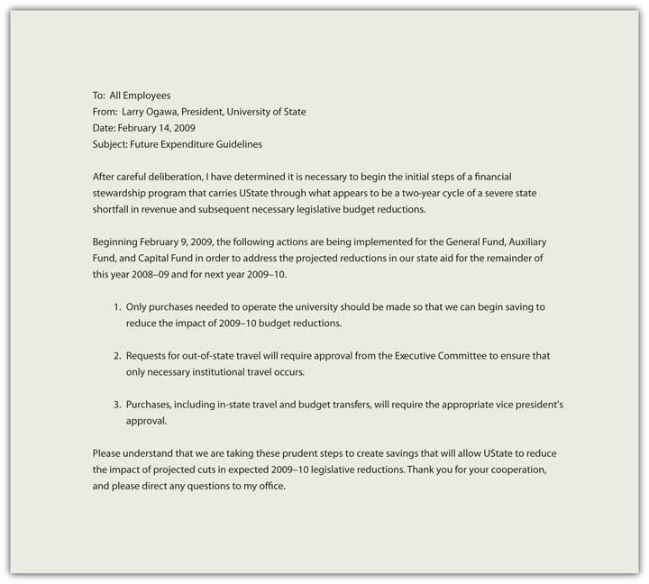Always consider the audience and their needs when preparing a memo. An acronym or abbreviation that is known to management may not be known by all the employees of the organization, and if the memo is to be posted and distributed within the organization, the goal is clear and concise communication at all levels with no ambiguity.
Memos are often announcements, and the person sending the memo speaks for a part or all of the organization. While it may contain a request for feedback, the announcement itself is linear, from the organization to the employees. The memo may have legal standing as it often reflects policies or procedures, and may reference an existing or new policy in the employee manual, for example.
The subject is normally declared in the subject line and should be clear and concise. If the memo is announcing the observance of a holiday, for example, the specific holiday should be named in the subject line—for example, use “Thanksgiving weekend schedule” rather than “holiday observance.”
Some written business communication allows for a choice between direct and indirect formats, but memorandums are always direct. The purpose is clearly announced.
Memos are a place for just the facts, and should have an objective tone without personal bias, preference, or interest on display. Avoid subjectivity.
LettersBrief message sent to recipient(s) that are often outside the organization. are brief messages sent to recipients that are often outside the organization.Bovee, C., & Thill, J. (2010). Business communication essentials: a skills-based approach to vital business English (4th ed.). Upper Saddle River, NJ: Prentice Hall. They are often printed on letterhead paper, and represent the business or organization in one or two pages. Shorter messages may include e-mails or memos, either hard copy or electronic, while reports tend to be three or more pages in length.
While e-mail and text messages may be used more frequently today, the effective business letter remains a common form of written communication. It can serve to introduce you to a potential employer, announce a product or service, or even serve to communicate feelings and emotions. We’ll examine the basic outline of a letter and then focus on specific products or writing assignments.
All writing assignments have expectations in terms of language and format. The audience or reader may have their own idea of what constitutes a specific type of letter, and your organization may have its own format and requirements. This chapter outlines common elements across letters, and attention should be directed to the expectations associated with your particular writing assignment. There are many types of letters, and many adaptations in terms of form and content, but in this chapter, we discuss the fifteen elements of a traditional block-style letter.
Letters may serve to introduce your skills and qualifications to prospective employers, deliver important or specific information, or serve as documentation of an event or decision. Regardless of the type of letter you need to write, it can contain up to fifteen elements in five areas. While you may not use all the elements in every case or context, they are listed in Table 9.1 "Elements of a Business Letter".
Table 9.1 Elements of a Business Letter
| Content | Guidelines |
|---|---|
| 1. Return Address | This is your address where someone could send a reply. If your letter includes a letterhead with this information, either in the header (across the top of the page) or the footer (along the bottom of the page), you do not need to include it before the date. |
| 2. Date | The date should be placed at the top, right or left justified, five lines from the top of the page or letterhead logo. |
| 3. Reference (Re:) | Like a subject line in an e-mail, this is where you indicate what the letter is in reference to, the subject or purpose of the document. |
| 4. Delivery (Optional) | Sometimes you want to indicate on the letter itself how it was delivered. This can make it clear to a third party that the letter was delivered via a specific method, such as certified mail (a legal requirement for some types of documents). |
| 5. Recipient Note (Optional) | This is where you can indicate if the letter is personal or confidential. |
| Content | Guidelines |
|---|---|
| 6. Salutation | A common salutation may be “Dear Mr. (full name).” But if you are unsure about titles (i.e., Mrs., Ms., Dr.), you may simply write the recipient’s name (e.g., “Dear Cameron Rai”) followed by a colon. A comma after the salutation is correct for personal letters, but a colon should be used in business. The salutation “To whom it may concern” is appropriate for letters of recommendation or other letters that are intended to be read by any and all individuals. If this is not the case with your letter, but you are unsure of how to address your recipient, make every effort to find out to whom the letter should be specifically addressed. For many, there is no sweeter sound than that of their name, and to spell it incorrectly runs the risk of alienating the reader before your letter has even been read. Avoid the use of impersonal salutations like “Dear Prospective Customer,” as the lack of personalization can alienate a future client. |
| 7. Introduction | This is your opening paragraph, and may include an attention statement, a reference to the purpose of the document, or an introduction of the person or topic depending on the type of letter. An emphatic opening involves using the most significant or important element of the letter in the introduction. Readers tend to pay attention to openings, and it makes sense to outline the expectations for the reader up front. Just as you would preview your topic in a speech, the clear opening in your introductions establishes context and facilitates comprehension. |
| 8. Body | If you have a list of points, a series of facts, or a number of questions, they belong in the body of your letter. You may choose organizational devices to draw attention, such as a bullet list, or simply number them. Readers may skip over information in the body of your letter, so make sure you emphasize the key points clearly. This is your core content, where you can outline and support several key points. Brevity is important, but so is clear support for main point(s). Specific, meaningful information needs to be clear, concise, and accurate. |
| 9. Conclusion | An emphatic closing mirrors your introduction with the added element of tying the main points together, clearly demonstrating their relationship. The conclusion can serve to remind the reader, but should not introduce new information. A clear summary sentence will strengthen your writing and enhance your effectiveness. If your letter requests or implies action, the conclusion needs to make clear what you expect to happen. It is usually courteous to conclude by thanking the recipient for his or her attention, and to invite them to contact you if you can be of help or if they have questions. This paragraph reiterates the main points and their relationship to each other, reinforcing the main point or purpose. |
| 10. Close | “Sincerely” or “Cordially” are standard business closing statements. (“Love,” “Yours Truly,” and “BFF” are closing statements suitable for personal correspondence, but not for business.) Closing statements are normally placed one or two lines under the conclusion and include a hanging comma, as in Sincerely, |
| 11. Signature | Five lines after the close, you should type your name (required) and, on the line below it, your title (optional). |
| 12. Preparation Line | If the letter was prepared, or word-processed, by someone other than the signatory (you), then inclusion of initials is common, as in MJD or abc. |
| 13. Enclosures/Attachments | Just like an e-mail with an attachment, the letter sometimes has additional documents that are delivered with it. This line indicates what the reader can look for in terms of documents included with the letter, such as brochures, reports, or related business documents. |
| 14. Courtesy Copies or “CC” | The abbreviation “CC” once stood for carbon copies but now refers to courtesy copies. Just like a “CC” option in an e-mail, it indicates the relevant parties that will also receive a copy of the document. |
| 15. Logo/Contact Information | A formal business letter normally includes a logo or contact information for the organization in the header (top of page) or footer (bottom of page). |
Remember that a letter has five main areas:
A sample letter is shown in Figure 9.5 "Sample Business Letter".
Figure 9.5 Sample Business Letter
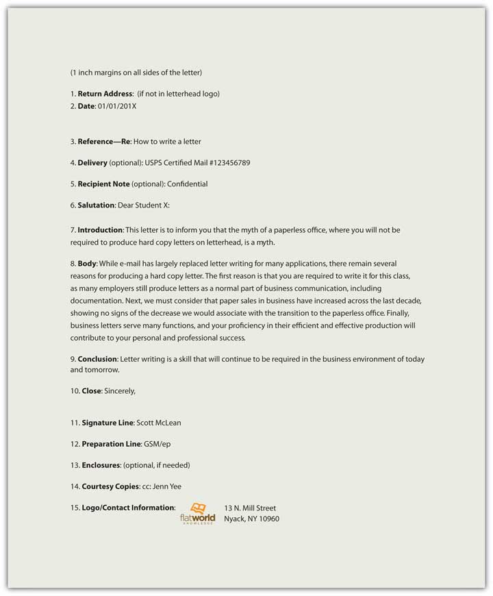Always remember that letters represent you and your company in your absence. In order to communicate effectively and project a positive image,
An effective business proposal informs and persuades efficiently. It features many of the common elements of a report, but its emphasis on persuasion guides the overall presentation.
Let’s say you work in a health care setting. What types of products or services might be put out to bid? If your organization is going to expand and needs to construct a new wing, it will probably be put out to bid. Everything from office furniture to bedpans could potentially be put out to bid, specifying a quantity, quality, and time of delivery required. Janitorial services may also be bid on each year, as well as food services, and even maintenance. Using the power of bidding to lower contract costs for goods and services is common practice.
In order to be successful in business and industry, you should be familiar with the business proposal. Much like a report, with several common elements and persuasive speech, a business proposal makes the case for your product or service. Business proposalsDocument designed to make a persuasive appeal to the audience to achieve a defined outcome, often proposing a solution to a problem. are documents designed to make a persuasive appeal to the audience to achieve a defined outcome, often proposing a solution to a problem.
Effective business proposals are built around a great idea or solution. While you may be able to present your normal product, service, or solution in an interesting way, you want your document and its solution to stand out against the background of competing proposals. What makes your idea different or unique? How can you better meet the needs of the company that other vendors? What makes you so special? If the purchase decision is made solely on price, it may leave you little room to underscore the value of service, but the sale follow-through has value. For example, don’t consider just the cost of the unit but also its maintenance. How can maintenance be a part of your solution, distinct from the rest? In addition, your proposal may focus on a common product where you can anticipate several vendors at similar prices. How can you differentiate yourself from the rest by underscoring long-term relationships, demonstrated ability to deliver, or the ability to anticipate the company’s needs? Business proposals need to have an attractive idea or solution in order to be effective.
You can be creative in many aspects of the business proposal, but follow the traditional categories. Businesses expect to see information in a specific order, much like a résumé or even a letter. Each aspect of your proposal has its place and it is to your advantage to respect that tradition and use the categories effectively to highlight your product or service. Every category is an opportunity to sell, and should reinforce your credibility, your passion, and the reason why your solution is simply the best.
Table 9.2 Business Proposal Format
| Cover Page | Title page with name, title, date, and specific reference to request for proposal if applicable. |
| Executive Summary | Like an abstract in a report, this is a one- or two-paragraph summary of the product or service and how it meets the requirements and exceeds expectations. |
| Background | Discuss the history of your product, service, and/or company and consider focusing on the relationship between you and the potential buyer and/or similar companies. |
| Proposal | The idea. Who, what, where, when, why, and how. Make it clear and concise. Don’t waste words, and don’t exaggerate. Use clear, well-supported reasoning to demonstrate your product or service. |
| Market Analysis | What currently exists in the marketplace, including competing products or services, and how does your solution compare? |
| Benefits | How will the potential buyer benefit from the product or service? Be clear, concise, specific, and provide a comprehensive list of immediate, short, and long-term benefits to the company. |
| Timeline | A clear presentation, often with visual aids, of the process, from start to finish, with specific, dated benchmarks noted. |
| Marketing Plan | Delivery is often the greatest challenge for Web-based services—how will people learn about you? If you are bidding on a gross lot of food service supplies, this may not apply to you, but if an audience is required for success, you will need a marketing plan. |
| Finance | What are the initial costs, when can revenue be anticipated, when will there be a return on investment (if applicable)? Again, the proposal may involve a one-time fixed cost, but if the product or service is to be delivered more than once, and extended financial plan noting costs across time is required. |
| Conclusion | Like a speech or essay, restate your main points clearly. Tie them together with a common them and make your proposal memorable. |
Ethos refers to credibility, pathos to passion and enthusiasm, and logos to logic or reason. All three elements are integral parts of your business proposal that require your attention. Who are you and why should we do business with you? Your credibility may be unknown to the potential client and it is your job to reference previous clients, demonstrate order fulfillment, and clearly show that your product or service is offered by a credible organization. By association, if your organization is credible the product or service is often thought to be more credible.
In the same way, if you are not enthusiastic about the product or service, why should the potential client get excited? How does your solution stand out in the marketplace? Why should they consider you? Why should they continue reading? Passion and enthusiasm are not only communicated through “!” exclamation points. Your thorough understanding, and your demonstration of that understanding, communicates dedication and interest.
Each assertion requires substantiation, each point clear support. It is not enough to make baseless claims about your product or service—you have to show why the claims you make are true, relevant, and support your central assertion that your product or service is right for this client. Make sure you cite sources and indicate “according to” when you support your points. Be detailed and specific.
A professional document is a base requirement. If it is less than professional, you can count on its prompt dismissal. There should be no errors in spelling or grammar, and all information should be concise, accurate, and clearly referenced when appropriate. Information that pertains to credibility should be easy to find and clearly relevant, including contact information. If the document exists in a hard copy form, it should be printed on a letterhead. If the document is submitted in an electronic form, it should be in a file format that presents your document as you intended. Word processing files may have their formatting changed or adjusted based on factors you cannot control—like screen size—and information can shift out of place, making it difficult to understand. In this case, a portable document format (PDF)—a format for electronic documents—may be used to preserve content location and avoid any inadvertent format changes when it is displayed.
Effective, persuasive proposals are often brief, even limited to one page. “The one-page proposal has been one of the keys to my business success, and it can be invaluable to you too. Few decision-makers can ever afford to read more than one page when deciding if they are interested in a deal or not. This is even more true for people of a different culture or language,” said Adnan Khashoggi, a successful multibillionaire.Riley, P. G. (2002). The one-page proposal: How to get your business pitch onto one persuasive page (p. 2). New York, NY: HarperCollins. Clear and concise proposals serve the audience well and limit the range of information to prevent confusion.
If you have been asked to submit a proposal it is considered solicited. The solicitation may come in the form of a direct verbal or written request, but normally solicitations are indirect, open-bid to the public, and formally published for everyone to see. A request for proposal (RFP), request for quotation (RFQ), and invitation for bid (IFB) are common ways to solicit business proposals for business, industry, and the government.
RFPs typically specify the product or service, guidelines for submission, and evaluation criteria. RFQs emphasize cost, though service and maintenance may be part of the solicitation. IRBs are often job-specific in that they encompass a project that requires a timeline, labor, and materials. For example, if a local school district announces the construction of a new elementary school, they normally have the architect and engineering plans on file, but need a licensed contractor to build it.
Unsolicited proposals are the “cold calls” of business writing. They require a thorough understanding of the market, product and/or service, and their presentation is typically general rather than customer-specific. They can, however, be tailored to specific businesses with time and effort, and the demonstrated knowledge of specific needs or requirement can transform an otherwise generic, brochure-like proposal into an effective sales message. Getting your tailored message to your target audience, however, is often a significant challenge if it has not been directly or indirectly solicited. Unsolicited proposals are often regarded as marketing materials, intended more to stimulate interest for a follow-up contact than make direct sales. Sue Baugh and Robert Hamper encourage you to resist the temptation to “shoot at every target and hope you hit at least one.”Baugh, L. S., & Hamper, R. J. (1995). Handbook for writing proposals (p. 3). New York, NY: McGraw-Hill. A targeted proposal is your most effective approach, but recognize the importance of gaining company, service, or brand awareness as well as its limitations.
The Writing Help Tools Center is a commercial enterprise, and offers a clear (and free) example of a business proposal here:
http://www.writinghelptools.com/proposal-sample.html
Business proposals need to target a specific audience.
Click on this link to see a sample request for proposal from the American Institute of Public Accounts.
http://www.aicpa.org/audcommctr/toolkitsnpo/SampleRFP_for_CPA_Services.htm
ReportsDocument designed to record and convey information to the reader. are documents designed to record and convey information to the reader. Reports are part of any business or organization; from credit reports to police reports, they serve to document specific information for specific audiences, goals, or functions. The type of report is often identified by its primary purpose or function, as in an accident report, a laboratory report, a sales report, or even a book report. Reports are often analytical, or involve the rational analysis of information. Sometimes they simply “report the facts” with no analysis at all, but still need to communicate the information in a clear and concise format. Other reports summarize past events, present current data, and forecast future trends. While a report may have conclusions, propositions, or even a call to action, the demonstration of the analysis is the primary function. A sales report, for example, is not designed to make an individual sale. It is, however, supposed to report sales to date, and may forecast future sales based on previous trends. This chapter is designed to introduce you to the basics of report writing.
Reports come in all sizes, but are typically longer than a page and somewhat shorter than a book. The type of report depends on its function. The function of the report is its essential purpose, often indicated in the thesis or purpose statement. The function will also influence the types of visual content or visual aids, representing words, numbers, and their relationships to the central purpose in graphic, representational ways that are easy for the reader to understand. The function may also contribute to parameters like report length (page or word count) or word choice and readability. “Focusing on the content of your longer business documents is not only natural but necessary because doing so helps ensure complete, correct information.”Bovee, C., & Thill, J. (2010). Business communication essentials: A skills-based approach to vital business English (4th ed.). Upper Saddle River, NJ: Prentice Hall.
Reports vary by function, and they also vary by style and tradition. Within your organization, there may be employer-specific expectations that need to be addressed to meet audience expectations. This chapter discusses reports in general terms, focusing on common elements and points of distinction, but reference to similar documents where you work or additional examination of specific sample reports may serve you well as you prepare your own report.
There are two main categories for reports, regardless of their specific function or type. An informational report informs or instructs and presents details of events, activities, individuals, or conditions without analysis. An example of this type of “just the facts” report is a police accident report. The report will note the time, date, place, contributing factors like weather, and identification information for the drivers involved in an automobile accident. It does not establish fault or include judgmental statements. You should not see “Driver was falling down drunk” in a police accident report. Instead, you would see “Driver failed sobriety tests and breathalyzer test and was transported to the station for a blood sample.” The police officer is not a trained medical doctor and is therefore not licensed to make definitive diagnoses, but can collect and present relevant information that may contribute to that diagnosis.
The second type of report is called an analytical report. An analytical report presents information with a comprehensive analysis to solve problems, demonstrate relationships, or make recommendations. An example of this report may be a field report by a Center for Disease Control (CDC) physician from the site of an outbreak of the H1N1 virus, noting symptoms, disease progression, steps taken to arrest the spread of the disease, and to make recommendations on the treatment and quarantine of subjects.
Table 9.3 "Types of Reports and Their Functions" includes common reports that, depending on the audience needs, may be informational or analytical.
Table 9.3 Types of Reports and Their Functions
| Type | Function |
|---|---|
| 1. Laboratory Report | Communicate the procedures and results of laboratory activities |
| 2. Research Report | Study problems scientifically by developing hypotheses, collecting data, analyzing data, and indicating findings or conclusions |
| 3. Field Study Report | Describe one-time events, such as trips, conferences, seminars, as well as reports from branch offices, industrial and manufacturing plants |
| 4. Progress Report | Monitor and control production, sales, shipping, service, or related business process |
| 5. Technical Report | Communication process and product from a technical perspective |
| 6. Financial Report | Communication status and trends from a finance perspective |
| 7. Case Study | Represent, analyze, and present lessons learned from a specific case or example |
| 8. Needs Assessment Report | Assess the need for a service or product |
| 9. Comparative Advantage Report | Discuss competing products or services with an analysis of relative advantages and disadvantages |
| 10. Feasibility Study | Analyze problems and predict whether current solutions or alternatives will be practical, advisable, or produced the desired outcome(s) |
| 11. Instruction Manuals | Communicate step-by-step instructions on the use of a product or service |
| 12. Compliance Report | Document and indicate the extent to which a product or service is within established compliance parameters or standards |
| 13. Cost-Benefit Analysis Report | Communicate costs and benefits of products or services. |
| 14. Decision Report | Make recommendations to management and become tools to solve problems and make decisions |
| 15. Benchmark Report | Establish criteria and evaluate alternatives by measuring against the establish benchmark criteria |
| 16. Examination Report | Report or record data obtained from an examination of an item or conditions, including accidents and natural disasters |
| 17. Physical Description report | Describe the physical characteristics of a machine, a device, or object |
| 18. Literature Review | Present summaries of the information available on a given subject |
Reports vary by size, format, and function. You need to be flexible and adjust to the needs of the audience while respecting customs and guidelines. Reports are typically organized around six key elements:
Pay attention to these essential elements when you consider your stakeholders, or those who have an interest in the report. That may include the person(s) the report is about, whom it is for, and the larger audience of the business, organization, or industry. Ask yourself who the key decision makers are who will read your report, who the experts or technicians will be, and how executives and workers may interpret your words and images. While there is no universal format for a report, there is a common order to the information. Each element supports the main purpose or function in its own way, playing an important role in the representation and transmission of information.
Table 9.4 Ten Common Elements of a Report
| Page | Element | Function | Example |
|---|---|---|---|
| 1. Cover | Title and image | Like the cover of a book, sometimes a picture, image, or logo is featured to introduce the topic to the reader. | |
| 2. Title Fly | Title only | This page is optional. | Feasibility Study of Oil Recovery from the X Tarpit Sands Location |
| 3. Title Page | Label, report, features title, author, affiliation, date, and sometimes for whom the report was prepared | Feasibility Study of Oil Recovery from the X Tarpit Sands Location Peak Oilman, X Energy Corporation Prepared for X | |
| 4. Table of Contents | A list of the main parts of the report and their respective page numbers |
|
|
| 5. Abstract |
|
This report presents the current status of the X tarpit sands, the study of oil recoverability, and the findings of the study with specific recommendations. | |
| 6. Introduction | Introduces the topic of the report | Oil sands recovery processes include ways to extract and separate the bitumen from the clay, sand, and water that make up the tar sands. This study analyzes the feasibility of extraction and separation, including a comprehensive cost/benefits analysis, with specific recommendations. | |
| 7. Body | Key elements of body include:
|
|
| Page | Element | Function | Example |
|---|---|---|---|
| 8. Conclusion | Concise presentation of findings | This portion clearly indicates the main results and their relation to recommended action or outcome. | |
| 9. References | Bibliography or Works Cited | This part contains a list of citations. | |
| 10. Appendix | Related supporting materials | This may include maps, analysis of soil samples, and field reports. |
Here is a checklist for ensuring that a report fulfills its goals.
Informational and analytical reports require organization and a clear purpose.
A résuméDocument that summarizes your education, skills, talents, employment history, and experiences in a clear and concise format for potential employers. is a document that summarizes your education, skills, talents, employment history, and experiences in a clear and concise format for potential employers. The résumé serves three distinct purposes that define its format, design, and presentation:
An online profile page is similar to a résumé in that it represents you, your background and qualifications, and adds participation to the publication. People network, link, and connect in new ways via online profiles or professional sites like LinkedIn. In many ways, your online profile is an online version of your résumé with connections and friends on public display. Your MySpace and Facebook pages are also often accessible to the public, so never post anything you wouldn’t want your employer (current or future) to read, see, or hear. This chapter covers a traditional résumé, as well as the more popular scannable features, but the elements and tips could equally apply to your online profile.
Regardless of the format, employers have expectations for your résumé. They expect it to be clear, accurate, and up to date.Bennett, S. A. (2005). The elements of résumé style: Essential rules and eye-opening advice for writing résumés and cover letters that work. AMACOM. This document represents you in your absence, and you want it to do the best job possible. You don’t want to be represented by spelling or grammatical errors, as they may raise questions about your education and attention to detail. Someone reading your résumé with errors will only wonder what kind of work you might produce that will poorly reflect on their company. There is going to be enough competition that you don’t want to provide an easy excuse to toss your résumé at the start of the process. Do your best work the first time.
Résumés have several basic elements that employers look for, including your contact information, objective or goal, education and work experience, and so on. Each résumé format may organize the information in distinct ways based on the overall design strategy, but all information should be clear, concise, and accurate.Simons, W., & Curtis, R. (2004). The Résumé.com guide to writing unbeatable résumés. New York, NY: McGraw-Hill.
This section is often located at the top of the document. The first element of the contact information is your name. You should use your full, legal name even if you go by your middle name or use a nickname. There will plenty of time later to clarify what you prefer to be called, but all your application documents, including those that relate to payroll, your social security number, drug screenings, background checks, fingerprint records, transcripts, certificates or degrees, should feature your legal name. Other necessary information includes your address, phone number(s), and e-mail address. If you maintain two addresses (e.g., a campus and a residential address), make it clear where you can be contacted by indicating the primary address. For business purposes, do not use an unprofessional e-mail address like sexiluvr93@hotmale.com or tutifruti@yafoo.com. Create a new e-mail account if needed with an address suitable for professional use.
Figure 9.7 Sample Contact Information
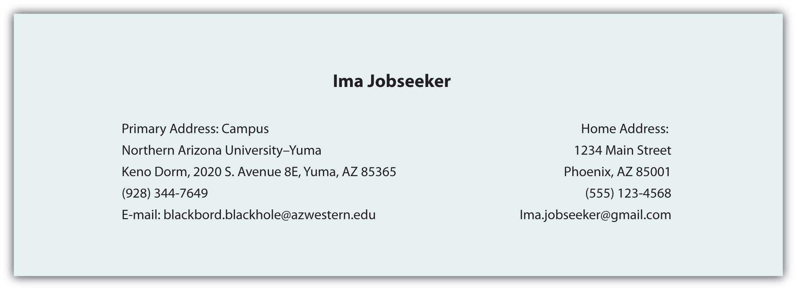This is one part of your résumé that is relatively simple to customize for an individual application. Your objective should reflect the audience’s need to quickly understand how you will help the organization achieve its goals.
Figure 9.8 Sample Objective
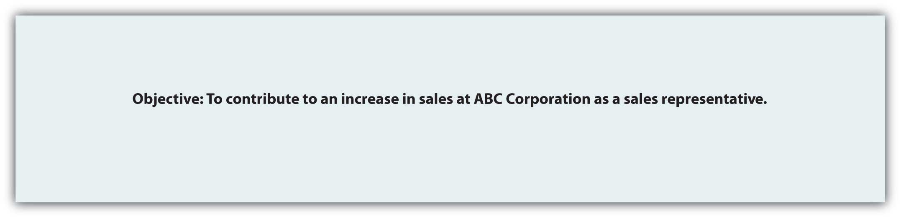You need to list your education in reverse chronological order, with your most recent degree first. List the school, degree, and grade point average (GPA). If there is a difference between the GPA in your major courses and your overall GPA, you may want to list them separately to demonstrate your success in your chosen field. You may also want to highlight relevant coursework that directly relate to the position.
Figure 9.9 Sample Education Field
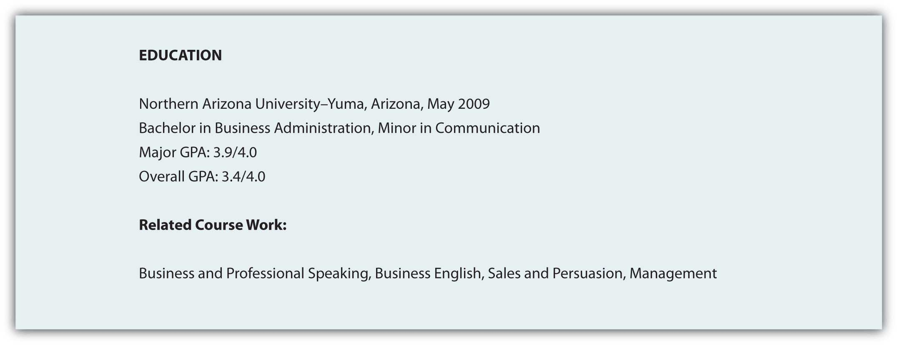List in reverse chronological order your employment history, including the positions, companies, locations, dates, duties and skills demonstrated or acquired. You may choose to use active, descriptive sentences or bullet lists, but be consistent. Emphasize responsibilities that involved budgets, teamwork, supervision, and customer service when applying for positions in business and industry, but don’t let emphasis become exaggeration. This document represents you in your absence, and if information is false, at a minimum you could lose your job.
Figure 9.10 Sample Work Experience
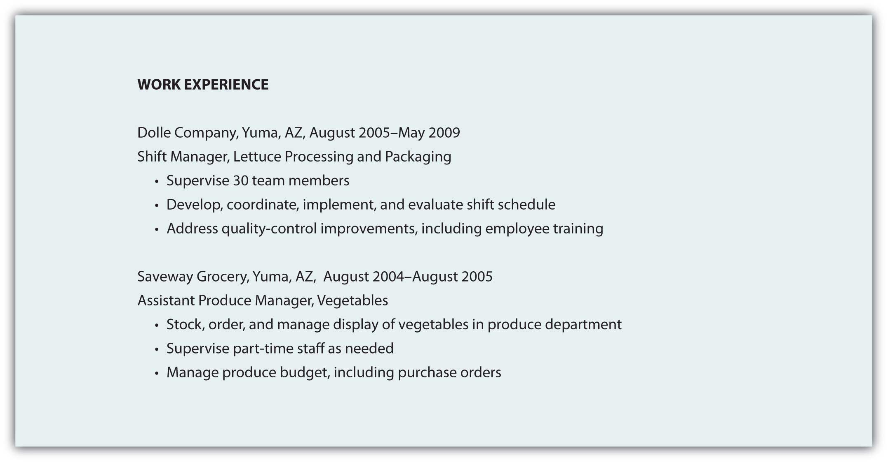Table 9.5 Types of Résumés
| Type | Function | Advantage | Disadvantage |
|---|---|---|---|
| 1. Reverse Chronological | Reverse chronological résumés (also called reverse time order) focus on work history. | Demonstrates a consistent work history | It may be difficult to highlight skills and experience. |
| 2. Functional | Functional résumés (also called competency-based résumés) focus on skills. | Demonstrates skills that can clearly link to job functions or duties | It is often associated with people who have gaps in their employment history. |
| 3. Combination | A combination résumé lists your skills and experience first, then employment history and education. | Highlights the skills you have that are relevant to the job and provides a reverse chronological work history | Some employers prefer a reverse chronological order. |
| 4. Targeted | A targeted résumé is a custom document that specifically highlights the experience and skills that are relevant to the job. | Points out to the reader how your qualifications and experience clearly match the job duties | Custom documents take additional time, preparation, analysis of the job announcement, and may not fit the established guidelines. |
| 5. Scannable | A scannable résumé is specifically formatted to be read by a scanner and converted to digital information. | Increasingly used to facilitate search and retrieval, and to reduce physical storage costs | Scanners may not read the résumé correctly. |
You may choose to include references at the end of your résumé, though “references upon request” is common. You may also be tempted to extend your résumé to more than one page, but don’t exceed that limit unless the additional page will feature specific, relevant information that represents several years of work that directly relates to the position. The person reading your résumé may be sifting through many applicants and will not spend time reading extra pages. Use the one-page format to put your best foot forward, remembering that you may never get a second chance to make a good first impression.
Just as there are common search terms, and common words in relation to each position, job description, or description of duties, your scannable résumé needs to mirror these common terms. Use of nonstandard terms may not stand out, and your indication of “managed employees” may not get the same attention as the word “supervision” or “management.”
If a job description uses specific terms, refers to computer programs, skills, or previous experience, make sure you incorporate that language in your scannable résumé. You know that when given a class assignment, you are expected to follow directions; similarly, the employer is looking for specific skills and experience. By mirroring the employer’s language and submitting your application documents in accord with their instructions, you convey a spirit of cooperation and an understanding of how to follow instructions.
Consider a brief section that lists common words associated with the position as a skills summary: customer service, business communication, sales, or terms and acronyms common to the business or industry.
You need to make sure your résumé is easy to read by a computer, including a character recognition program. That means no italics, underlining, shading, boxes, or lines. Choose a sans serif (without serif, or decorative end) font like Arial or Tahoma that won’t be misread. Simple, clear fonts that demonstrate no points at which letters may appear to overlap will increase the probability of the computer getting it right the first time. In order for the computer to do this, you have to consider your audience—a computer program that will not be able to interpret your unusual font or odd word choice. A font size of eleven or twelve is easier to read for most people, and while the computer doesn’t care about font size, the smaller your font, the more likely the computer is to make the error of combining adjacent letters.
Use a laser printer to get crisp letter formation. Inkjet printers can have some “bleed” between characters that may make them overlap, and therefore be misunderstood. Folds can make it hard to scan your document. E-mail your résumé as an attachment if possible, but if a paper version is required, don’t fold it. Use a clean, white piece of paper with black ink; colors will only confuse the computer. Deliver the document in a nine-by-twelve-inch envelope, stiffened with a sheet of cardstock (heavy paper or cardboard) to help prevent damage to the document.
Figure 9.11 Sample Format for Chronological Résumé
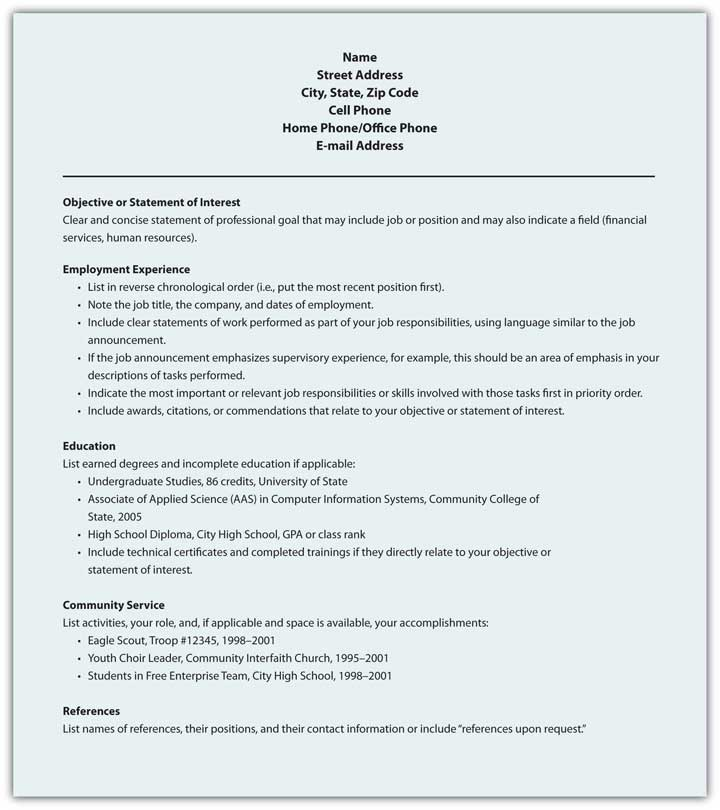Figure 9.12 Sample Format for Functional Résumé
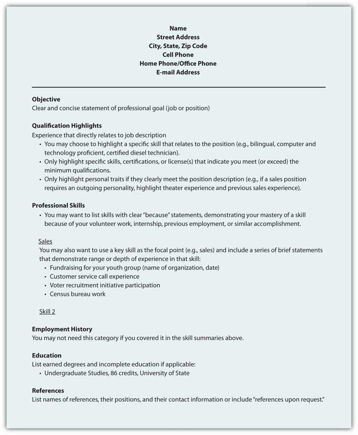Figure 9.13 Sample Format for Scannable Résumé
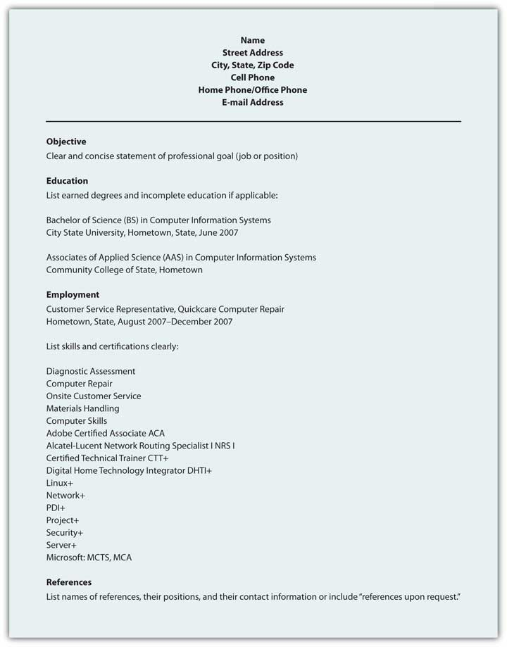A résumé will represent your skills, education, and experience in your absence. Businesses increasingly scan résumés into searchable databases.
A sales messageThe central persuasive message that intrigues, informs, persuades, calls to action, and closes the sale. is the central persuasive message that intrigues, informs, persuades, calls to action, and closes the sale. Not every sales message will make a direct sale, but the goal remains. Whether your sales message is embedded in a letter, represented in a proposal, or broadcast across radio or television, the purpose stays the same.
Sales messages are often discussed in terms of reason versus emotion. Every message has elements of ethosCredibility., or credibility; pathosPassion and enthusiasm., or passion and enthusiasm; and logosLogic and reason., or logic and reason. If your sales message focuses exclusively on reason with cold, hard facts and nothing but the facts, you may appeal to some audience, but certainly not the majority. Buyers make purchase decisions on emotion as well as reason, and even if they have researched all the relevant facts about competing products, the decision may still come down to impulse, emotion, and desire. If your sales message focuses exclusively on emotion, with little or no substance, it may not be taken seriously. Finally, if your sales message does not appear to have credibility, the message will be dismissed. In the case of the sales message, you need to meet the audience’s needs that vary greatly.
In general, appeals to emotion pique curiosity and get our attention, but some attention to reason and facts should also be included. That doesn’t mean we need to spell out the technical manual on the product on the opening sale message, but basic information about design or features, in specific, concrete ways can help an audience make sense of your message and the product or service. Avoid using too many abstract terms or references, as not everyone will understand these. You want your sales message to do the work, not the audience.
A sales message has the five main parts of any persuasive message.
Table 9.6 Five Main Parts of a Persuasive Message
| Attention Statement | Use humor, novelty, surprise, or the unusual to get attention. |
| Introduction | Build interest by appealing to common needs and wants, and include a purpose statement to set up expectations. |
| Body | Establish credibility, discuss attractive features, and compare with competitors, addressing concerns or potential questions before they are even considered. |
| Conclusion | Sum it up and offer solution steps or calls to action, motivating the audience to take the next step. The smaller the step, the more likely the audience will comply. Set up your audience for an effective closing. |
| Residual Message | Make the sale, make them remember you, and make sure your final words relate to the most important information, like a contact phone number. |
Your sales message will compete with hundreds of other messages and you want it to stand out.Price, D. (2005, October 30). How to communicate your sales message so buyers take action now! Retrieved June 14, 2009, from ezinearticles.com: http://ezinearticles.com/?How-To-Communicate-Your-Sales-Message-So-Buyers-Take-Action-Now!&id=89569 One effective way to do that is to make sure your attention statement(s) and introduction clearly state how the reader or listener will benefit.
Regardless of the product or service, the audience is going to consider first what is in it for them. A benefitWhat the buyer gains with the purchase. is what the buyer gains with the purchase and is central to your sales message. They may gain social status, popularity, sex appeal, or even reduce or eliminate something they don’t want. Your sales message should clearly communicate the benefits of your product or service.Winston, W., & Granat, J. (1997). Persuasive advertising for entrepreneurs and small business owners: How to create more effective sales messages. New York, NY: Routledge.
Your product or service may sell itself, but if you require a sales message, you may want to consider these strategies for success:
These four steps can help improve your sales message, and your sales. Invest your time in planning and preparation, and consider the audience’s needs as you prepare your sales message.
Figure 9.14 Sample E-mail Sales Message
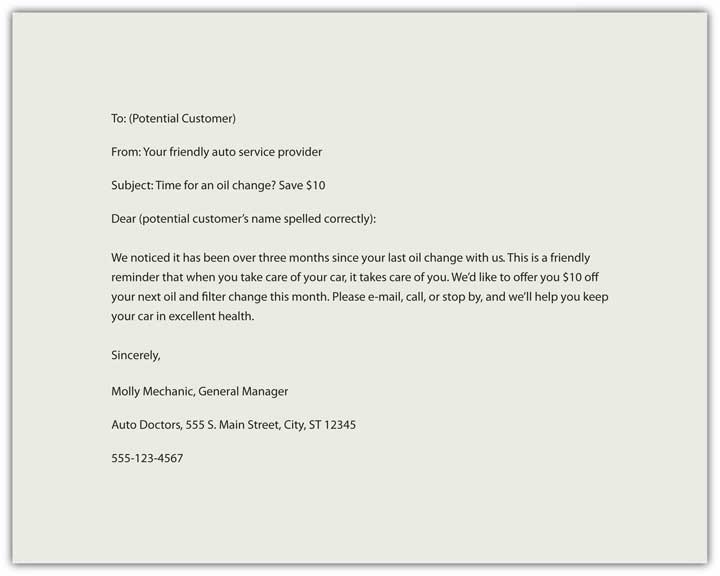A sales message combines emotion and reason, and reinforces credibility, to create interest in a product or service that leads to a sale.
Visit NetLingo for some common texting abbreviations. http://www.netlingo.com/acronyms.php
The Online Writing Lab (OWL) at Purdue University includes an area on e-mail etiquette. http://owl.english.purdue.edu/owl/resource/636/01
Shea’s Netiquette online is another useful source. http://www.albion.com/netiquette/book/index.html
The New York Times blog “Gadgetwise: Getting Smart About Personal Technology” discusses an ever-changing variety of questions related to netiquette. http://gadgetwise.blogs.nytimes.com
The OWL at Purdue also includes pages on memo writing and a sample memo. http://owl.english.purdue.edu/owl/resource/590/01; http://owl.english.purdue.edu/owl/resource/590/04
For 642 sample letters, from cover letters to complaints, go to this site. http://www.4hb.com/letters
Visit this Negotiations.com page for information on writing a request for proposal, quotation, and information. http://www.negotiations.com/articles/procurement-terms
Visit this site for additional proposal writing tips. http://www.4hb.com/0350tipwritebizproposal.html
TechSoup offers a sample Request for Proposal. http://www.techsoup.org/toolkits/rfp/RFP_client_mgmt2.pdf
Your online profile counts as much as your résumé. http://www.npr.org/templates/story/story.php?storyId=105483848&sc=nl&cc=es-20090628
Read a Forbes article on “Ten Ways to Torpedo Your Sales Pitch.” http://www.forbes.com/2007/08/01/microsoft-ebay-symantec-ent-sales-cx_mf_0801byb07_torpedo.html
Direct mail and other sales copy written by Susanna Hutcheson. http://www.powerwriting.com/port.html
Visit this site for tips on how to write a public service announcement (PSA). http://www.essortment.com/all/tiphowtowrite_rjbk.htm
The National Institute of Justice provides guidelines on writing a PSA. http://www.ojp.usdoj.gov/nij/topics/courts/restorative-justice/marketing-media/psa.htm
The AdCouncil provides a range of examples. http://www.adcouncil.org/default.aspx?id=15